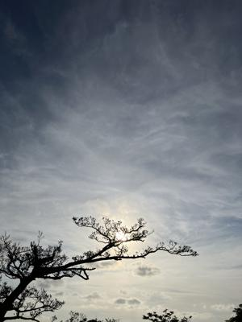
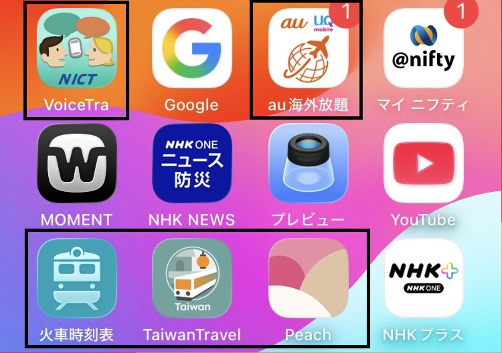
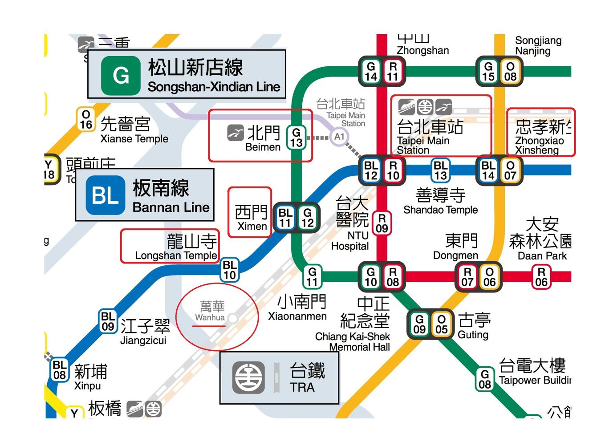

うるがいの話 ある日
最新: 憲法記念日【うるがいの話 ある日】とは 一日だけのプログです
『うるがいの話』の最新一日だけのプログで、通信料が少なく経済的だ。カニの画像をクリックすると全ての日付が載る『うるがいの話』サイトを表示します
|
|
【うるがいの話】 うるがい(ｳﾙｶﾞｲ urugai)とは、『もずくがに』の名前でとても大きくなります。 |
|---|---|
|
|
【カミマヤーの話】 猫のことを方言でマヤーといいます。カミマヤー（kamimayaa）とは、神の猫のことです。 |
|
【たながぁの音楽】 たながぁ（ﾀﾅｶﾞｰ tanagaa）とは手長えびのことで、何種類かあり大きいのは車 エビぐらいになります。 |

|
【ぶながぁの話】 ぶながぁ(ﾌﾞﾅｶﾞｰ bunagaa)とは、赤い髪の毛、赤い身体、そして身長は１ｍ２０ｃｍ ぐらい、川の蟹を食べているの目撃された。場所は沖縄県国頭郡大宜味村のと ある村僕の隣近所に住んでいる爺さんから、聞いた話です。 |
|
|
【ギーマの話】 ギーマ(giima)とは、山原の里山に咲くスズランに似た、 花を付けます。実は食べられます、 気が付くと口の周りが紫になっています。 |
2026年05月03日 (日）憲法記念日
18:14

モバイルバッテリー、次回の旅行から持って行きません。だいた
い２０１８年夏ごろの製品（今から約７〜８年前）ですね、旅行
へ行く前に充電しようと残量を確認したら、７０％残っている。
恐るべし、一年前に充電し放置したままだったのに。飛行機の持
ち込みが、うるさいのと一度も利用していないのが理由です。
今回、旅行のためのスマホアプリです。グーグルマップが、抜け
てますが、子供の指示がありました、フムフムです。

旅行ガイドブックの電車は、ＭＲＴのみ（本屋で数冊調べた）で
台湾鉄道が、載っていませんでした。手落ちだと、思います。枠
が、利用した駅です。

子供が『帰国するとき入国手続を登録した？』と言う、ン？、分
からん。何やら、日本に入国するために『Visit Japan Web』な
るものがあり、事前に登録し入国時にスマホでＱＲコードをかざ
すとのこと。んー、面倒くさいので前回同様、紙の申請で済まし
た。多分、次回も。以上で、旅行のまとめでした。終わり